Future Directions In AI Conservation


1. AI-Powered Drones for Wildlife Monitoring :-
-
Drones with AI cameras will track animals from the sky without
disturbing them.
-
They will detect poachers, track endangered species, and monitor
forests in real-time.

2. Smarter AI Cameras & Sensors :-
-
AI cameras will automatically identify animals and send alerts when
needed.
-
Motion and heat sensors will track animals even in the dark or thick
forests.
3. AI + DNA Tracking :-
-
AI will analyze DNA samples (like hair or droppings) to identify rare
species and check their health.
-
This will help scientists find and protect animals without needing to
catch them.
📸
🧬
Next Page